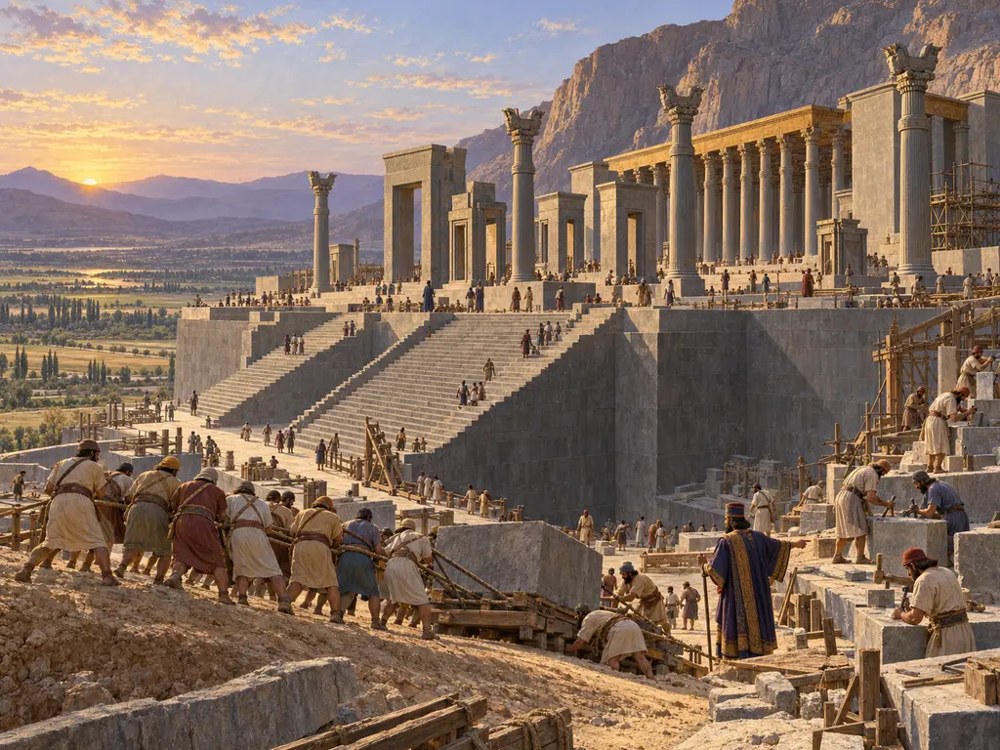
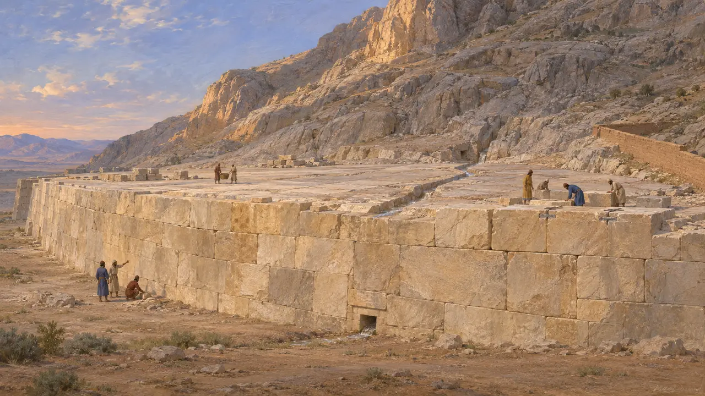
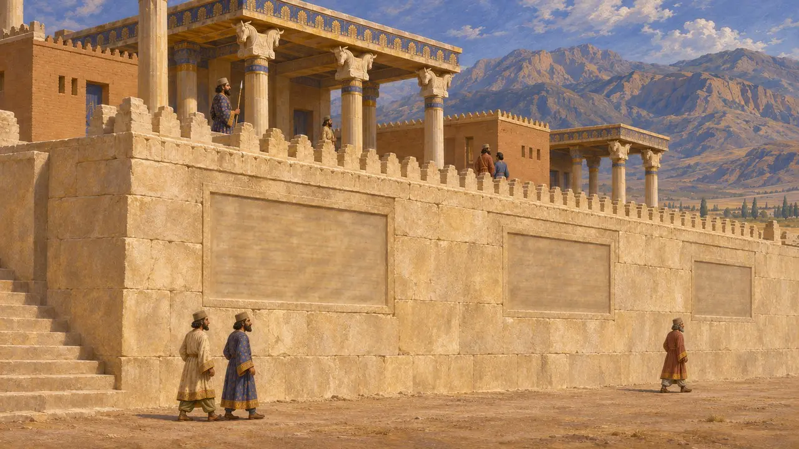
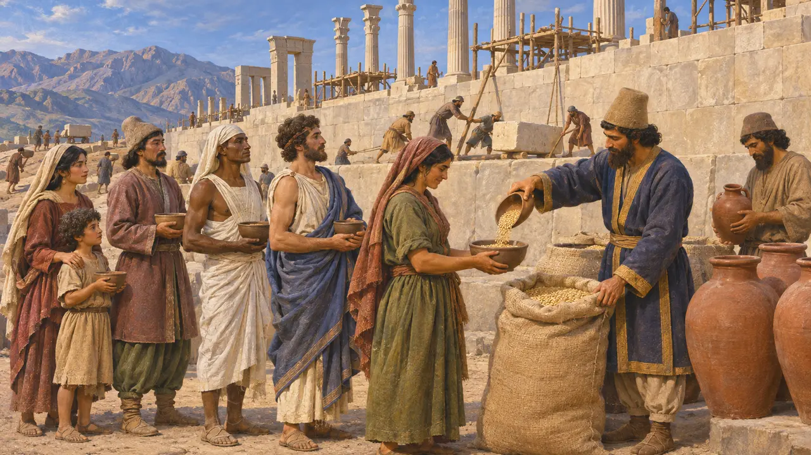
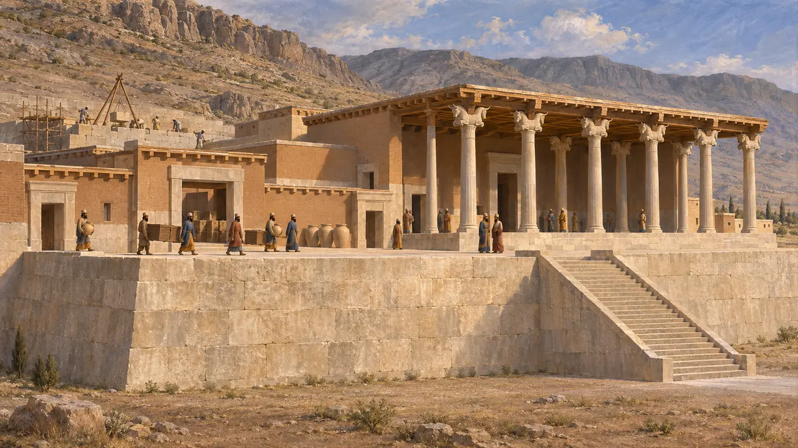
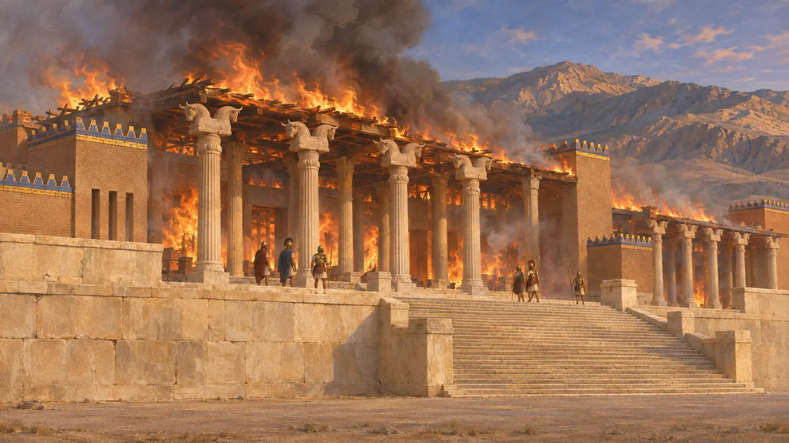

Königsterrasse
Steinerne Plattform der Palaststadt des Dareios in Parsa (Persepolis), begonnen um 518 v. Chr.
Im Spiel: Level 4: Die Terrasse
Die Königsterrasse ist die große Steinplattform, auf der die Paläste von Parsa standen, mit dem Rücken an den Fels des Kuh-e Rahmat gesetzt. Dareios begann sie wahrscheinlich um 518 v. Chr., und seine Nachfolger bauten über ein Jahrhundert lang daran weiter. Sie erhob die Hallen des Königs über die Ebene des Pulvar und gab dem Reich ein zeremonielles und administratives Zentrum im persischen Kernland.
Im Spiel: Das Spiel lässt die Terrasse im Parsa-Level entstehen, datiert auf 521 v. Chr. bis 509 v. Chr.; tatsächlich begannen die Arbeiten wohl um 518 v. Chr. und dauerten unter Xerxes und Artaxerxes I. an. Die Kosten in Gerste und Wein vereinfachen das Rationssystem der Festungstäfelchen.

Eine an den Berg gelehnte Plattform
Zeitgenössisch belegtDie Ausgrabungen zeigen eine Plattform von etwa 455 v. Chr. mal 300 Metern, teils aus dem Fels geebnet, teils mit großen Kalksteinblöcken aufgemauert. Die Blöcke waren ohne Mörtel gefügt und durch in Blei gesetzte Eisenklammern verbunden. Im Westen ragte ihre Front stellenweise mehr als 10 Meter über die Ebene auf, und an der Ostseite zog sich eine Lehmziegelmauer den Hang hinauf. In den Fels geschlagene Rinnen leiteten das Regenwasser unter den Gebäuden ab.
E. F. Schmidt, Persepolis I, 1953

Dareios' Worte an der Südmauer
Zeitgenössisch belegtDareios ließ in die Südfront der Terrasse Inschriften in Altpersisch, Elamisch und Akkadisch setzen. Im elamischen Text sagt er, an dieser Stelle habe zuvor keine Festung gestanden, und durch die Gunst Ahuramazdas habe er eine errichtet, sicher und schön. Ein weiterer Text bittet den Gott, das Land vor feindlichen Heeren, Hungersnot und der Lüge zu schützen.
DPf; DPd

Die Kurtash, die es erbauten
Zeitgenössisch belegtDie Täfelchen aus dem Befestigungsarchiv von Persepolis, zwischen 509 v. Chr. und 493 v. Chr. meist auf Elamisch geschrieben, verzeichnen Rationen von Gerste, Wein und anderen Gütern für Arbeiter, die kurtash genannt werden. Männer, Frauen und Kinder vieler Völker erscheinen darin, darunter Lyder, Ionier, Ägypter und Baktrer. Die späteren Täfelchen aus dem Schatzhaus zeigen, dass manche Arbeiter in Parsa teilweise in Silber bezahlt wurden.
R. T. Hallock, Persepolis Fortification Tablets, 1969; G. G. Cameron, Persepolis Treasury Tablets, 1948

Wann es begann und wozu es diente
UmstrittenKein Text nennt das Gründungsjahr, daher wird der Baubeginn anhand der Inschriften, der Archive und der Bauabfolge datiert, meist auf etwa 518 v. Chr. oder wenig später. Auch über den Zweck der Anlage streiten die Historiker. Manche sehen in ihr vor allem eine Bühne für das königliche Zeremoniell, gar für ein Neujahrsfest, das keine antike Quelle beschreibt; andere betonen ihre Rolle als Schatzhaus, Residenz und Mittelpunkt der königlichen Wirtschaft.
P. Briant, From Cyrus to Alexander, 2002

Der Brand von 330
Antiker BerichtGriechische Autoren der römischen Zeit schildern das Ende der Terrassenpaläste. Diodor beschreibt die Zitadelle und ihre Mauern, bevor er erzählt, wie Alexander die Paläste niederbrannte. Arrian sagt, Alexander habe dies als Rache dafür getan, dass die Perser im Jahr 480 v. Chr. griechische Tempel niedergebrannt hatten. Diodor und Plutarch fügen die Geschichte hinzu, die Hetäre Thaïs habe bei einem Trinkgelage zu dem Brand angestiftet, eine Erzählung, die viele Historiker bezweifeln.
Diodorus 17.71-72; Arrian, Anabasis 3.18.11-12; Plutarch, Alexander 38
Quellen
- E. F. Schmidt, Persepolis I, 1953
- DPf; DPd
- R. T. Hallock, Persepolis Fortification Tablets, 1969
- G. G. Cameron, Persepolis Treasury Tablets, 1948
- P. Briant, From Cyrus to Alexander, 2002
- Diodorus 17.71-72